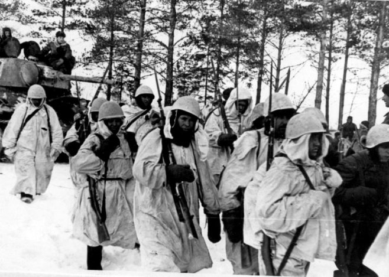
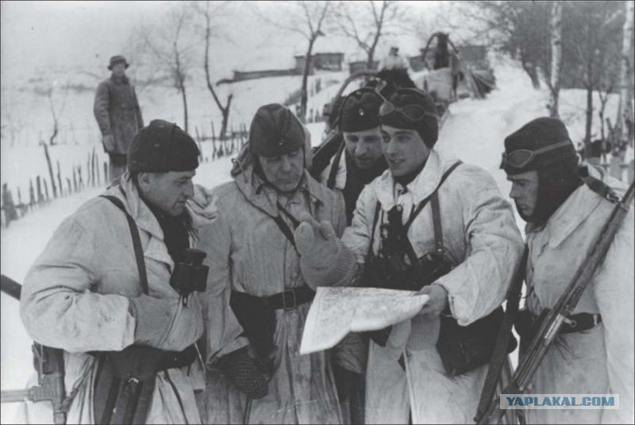

Командир партизанского отряда им. Чапаева. Головач Ф.В., адъютант Покровского Долгий, комиссар п.о.им. Чапаева Мироненко, нач.штаба будущего партизанского соединения А.А.Хляпин, командир сапёрной группы Морозов; второй ряд: политрук 2-ой роты С.Е.Дорошенко, нач.штабап.о.им Чапаева В.В.Гончаров, командир 1 роты Т.С. Бондарь, командир 2-ой роты Б.А.Замыка; стоят: С.Я. Ваксман, П.Г.Муравьев ,нач. штаба п.о. Покровский, Д.С.Коротченко, Т.А.Строкач, И.Ф.Чепурной, И.Я.Шугипанов, Д.Т.Гопиенко.
Командир партизанского отряда им.Чапаева Головач Федор Васильевич, командир отделения Рыбачук Александр Константинович. Совещание командования партизанского соединения. (слева направо: секретарь ЦККП (б) У Д.С.Коротченко, начальник штаба Украинского партизанского движения Т.А.Строкин, И.Ф.Чепурной- комиссар соединения Хитриченка, С.Я.Ваксман- уполномоченный особого отдела соединения Хитриченка , Морозов- командир сапёрной группы, Ф.В.Головач- командир партизанского отряда им. Чапаева(сидит на земле) рядом сидит И.Я.Шугипанов – командир партизанского отряда, Бондарь Т.С- командир 1 роты).

В начале января 1943 г. Двенадцать партизан Чернобыльского района Киевской области: Р.А.Безрук,Ф.В.Головач,С.Е.Дорошенко,Б.А.Замыка, Г.П.Кириленко, А.Н.Пискун, И.Д.Романенко, П.Н.Тимченко, С.Г.Чернюк, Г.С.Юрченко, П.П.Янченко, И.С.Ященко и одиннадцать из отряда имени Котовского Брагинского р-на Полесской области в районе хутора Скородное Комаринского р-на объединились и создали партизанское отделение имени Чапаева. Представителями партизанского отряда имени Котовского были: С.Г.Белобров, Т.С.Бондарь, Т.С.Бондарь (братья из Ладыжич), П.И.Воропай, Ф.И.Вяльдин, В.В.Гончаров, Л.С.Дубров, Ф.И.Котов, П.И.Приданов, А.В.Рой (из Гденя), М.Н.Серов. Через неделю на общем собрании заслушали биографию каждого, утвердили структуру и название отряда, избрали командование. Командиром избран Ф.В.Головач, комиссаром – С.А.Замыка. Было сформировано три взвода. Командиром 1-го избран В.В.Гончаров, 2-го – С.Е.Дорошенко, 3-го – Т.С.Бондарь. Командирами отделений С.Г.Чернюк, Г.С.Юрченко, Ф.И.Кетов, П.И.Приданов, А.В.Рой, М.Н.Серов, хозотделения – И.С.Ященко. В течение января-марта 1943 г. Партизанский отряд ликвидировал полицейские станы, участки, группы, немецко-полицейские гарнизоны, в том числе Комаринский и создал у междуречья Днепр – Припять партизанскую зону. Назначенная партизанская комендатура осуществляла функции Советской власти. В конце марта отряд передислоцировался на правобережье Припяти.
В течение апреля он ликвидировал до десяти полицейских участков, уничтожил более ста гитлеровцев в селе Сороконишичи Чернобыльского района и в конце апреля возвратился в свою партизанскую зону. 1-го мая партизаны провели парад своих сил, беседы и митинги в населённых пунктах, в том числе в Комарине, где было более 300 граждан (собрались на базарной площади). Митинг открыл командир партизанского отряда Ф.В.Головач, с сообщением-докладом выступил комиссар В.М.Мироненко. Ещё 27-29 апреля отряд посетил уполномоченный «Центра». Вместо взводов были созданы роты: командиром 1-ой назначен Т.С.Бондарь, политруком – С.Д.Иванов: командиром 2-ой роты – Б.А.Замыка, политруком – С.Е.Дорошенко; командиром отряда – Ф.В.Головач, комиссаром – В.М.Мироненко (с 20 марта бывшего уполномоченным «Центра»); начальником штаба – В.В.Гончаров. Командирами взводов этим приказом назначены Ф.И.Кетов, М.Н.Серов, Ф.В.Федоренко, П.И.Приданов. В первых числах мая была создана партийная и комсомольская организация в отряде. Секретарём партийной организации избран С.Е.Дорошенко, секретарём комсомольской – Ларкин. В это время «Центр» прислал в отряд уполномоченным особого отдела Д.Т.Гопиенка.
9 мая с радиостанцией в отряд прибыл уполномоченный ЦК КП(б) УкраиныИ.Г.Миронов с приказом от Ковпака и С.Д.Руднева идти на соединение. Тогда же он вручил комиссару письмо секретарю ЦК КП (б) У Д.С. Коротченко в этом же плане. Идя на соединение с Ковпаком, мы оставили недалеко от Посудова семейных и нестроевых партизан до 30 человек. Командиром 2-го партизанского отряда имени Чапаева был назначен И.С. Ященко, комиссаром Д.В. Колиениченко. В дни экспедиций карателей партизаны этого отряда вынуждены были находиться в непроходимых болотах, а дети и нестроевые «приписаться» в сёла к семьям советских патриотов в Комаринском районе. В июле отряд им. Чапаева, следуя к Ковпаку, имел бои в районе Хойники – Катушки. В ночь с 17 на 18 мая строил наплавной мост через Припять и соединился с «ковпаковцами». С 17 мая по 12 июня он был в составе Сумского партизанского соединения, которым командовал С.А. Ковпак и С.В. Руднев.

12 июня, согласно указанию секретаряЦК КП (б) У Д.С. Коротченко и начальника Украинского штаба партизанского движения, отряд Т.А. Строкача стал костяком для создания Киевского столичного партизанского соединения. Посетившие 24 июня отряд Д.С. Коротченко и Т.А. Строкач, поручили мне сформировать группу партизан для выполнения этого задания. Оружие и боеприпасы отряд дополучал на аэродроме Дуброва в Лельчицком районе. Но новый начальник штаба партизан Киевской области Г.Ф. Покровский не разрешил мне выступить 25 июня, а на второй день отряд вместе с другими партизанами был блокирован 8-й немецкой армией. Тяжёлые страдания и лишения переживали партизаны в 20-дневной блокаде, но выстояли и сохранили свой состав.
Когда 8 сентября мне было разрешено выполнения задания ЦК КП (б) У и УШПД, время было утеряно для создания партизанского соединения в своей зоне. 7 июля соединение создал М.М. Таранущенко. (В июле отряд имени Чапаева №2 был соединён с этим отрядом.) А несколько позже – Ю.С. Збанацкий. Наши резервы вошли в эти соединения. В сентябре – октябре отряды №1 и №2 оказали большую помощь частям Красной Армии в форсировании Днепра и Припяти, в минировании дорог, в разведке и совместно с воинами 15-го корпуса 13-й армии освобождали населённые пункты от немецко-фашистских захватчиков в междуречье Днепр-Припять. В конце сентября 1-ый отряд насчитывал 312 бойцов, имея три роты, разведвзвод, сапёрное и хозяйственное отделения, штаб. Бессменным писарем штаба был коммунист, уроженец Гомельской области Речицкого района с Ровное (позже зампред. Комаринского райисполкома) Андрей Епифанович Сивуха. 2-й отряд насчитывал 192 бойца, имел 4 взвода, конный взвод разведки, пеший взвод разведки, сапёрное отделение, штаб. Отрядами уничтожено до тысячи гитлеровцев и других врагов Советской власти, пять вражеских автомашин с солдатами, 4 танка, 3 непаровых судна, самолёт, подорвано 5 паромов, 10 мостов, разгромлено 50 гарнизонов, участков, станов. Партизанские отряды им, Чапаева №1 и №2 были интернациональные по своему составу. В первом отряде было 10 национальностей
{kind=link}
{kind=link}
{kind=link}